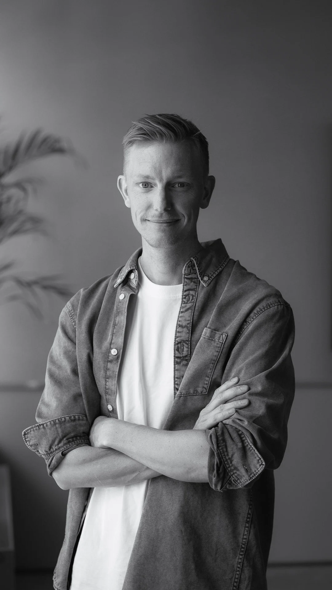

Enter the code you were given and the site opens up. If you were not given one, drop me a line and I will hand it over.
The work behind this code is shared in confidence. By entering it you agree to keep it to yourself. No forwarding the code, no sharing screens, screenshots or files outside the conversation we are having.
I have been in the digital design industry for a long time, long enough to have seen a few trends come and go, and to have cultivated expertise across Digital Product Design, UX and Art Direction in agencies as well as tech companies.
My primary focus lies in Design and UX but I also have experience in C# programming in Unity, which not only enhances my understanding but also enables effective communication with developers.

I design digital experiences with a holistic approach, ensuring accessibility, ease of use and minimalistic design. I prioritise user feedback and testing to refine my work. The best interfaces are the ones that are simply there, doing their job, letting you get on with yours and only asking for attention when it is actually needed.
I like to get hands on early, building and testing rough ideas rather than keeping them in a continuous discussion without testing.
In our fast-paced world of technology, I firmly believe in the importance of constant learning and adaptation. Tomorrow's experiences may differ vastly from today's, and it's essential to stay ahead of the curve. With a curious mindset I thrive on embracing new technologies and ideas, each innovation is an opportunity to expand my skill set and deepen my understanding.
When leading projects, I prioritise teamwork, ensuring every team member's voice is heard, because exceptional experiences are born from collaboration. It's the synergy of diverse skills that drives success.
I value an environment where we collaborate through thick and thin. In my view, all ideas hold equal weight in a humble atmosphere, where the best idea wins, not the loudest voice. A positive team spirit leads to better products.
Figma, Sketch, Illustrator, Photoshop, After Effects, Adobe Premiere, InDesign, Unity, Blender, and the list keeps growing.
(And yes, with the knowledge of how things are made, AI gives me superpowers. At least, that is how I tackle it: as a designer I am handed a much bigger playground, and I can do things in an hour that used to take weeks.)
Designing the interface between humans and industrial robots.
Rebl Industries builds robotic workmates that take on repetitive, heavy and hazardous tasks in warehouses and production environments. My responsibility was to design the complete operator experience.
These are fast-paced environments where operators have a lot going on around them. They don't have time to stop and figure out an interface. They need to quickly understand what the robot is doing, what it needs and when they need to step in.
The challenge was to make something very complex behind the scenes feel simple, clear and reliable in the middle of all that.
There were no existing products or established patterns to reference. We were figuring out how an operator should interact with and understand a robotic workmate while the product itself was still being developed.
I had to work through questions like what information an operator actually needs, what the robot should communicate and how to make it immediately clear when something needs attention.
The interface also had to adapt to three different jobs: picking products, palletizing and inducing. Each with its own needs, while still feeling like one product.
A big part of the process was getting out on site and seeing what the environment was actually like.
I worked closely with operators, including at IKEA, observing their workflows and talking directly with them about how they worked, what slowed them down and what they needed from the robot.
The operator app became the main connection between the person and the robot.
The goal wasn't to show everything the robot could do. It was to show the right information at the right time and make it immediately clear what was happening and what the operator needed to do next.
Just as important was how the robot came across. It had to feel like a helper and a workmate, something positive that takes the heavy and repetitive work off your hands, not a machine sent in to take your job. Giving it a name and a bit of personality made that shift, and operators started talking about it as part of the team.
The robot is a colleague, not a replacement.
A complete redesign of a mobile browser used by millions of people around the world.
We set out to completely redesign Opera for Android, from the overall experience and navigation to the visual language and components behind it.
We were a small team of three sharing responsibility across the product. This meant working on everything from early concepts and interaction patterns to testing, iteration and final implementation.
With millions of existing users, even small changes could have a big impact. We had to balance pushing the product forward with respecting the habits people had already built around it.
Testing was a big part of how we worked. We used A/B testing and beta releases to try ideas with real users before rolling them out more broadly.
We also sent out surveys and engaged directly with the Opera community, which at the time was incredibly active and vocal about the product.
This gave us a constant feedback loop between what we designed, what the data told us and what people were actually saying.
Alongside the redesign, we built a new design system for the browser.
We created reusable components, interaction patterns and guidelines that gave the product a more consistent foundation and made it easier for design and development to work together as the browser continued to evolve.
One direction we pushed for was moving the search and address bar to the bottom of the screen, keeping one of the most used actions closer to the thumb and easier to reach with one hand.
It challenged a browser pattern that was very established at the time, so it took a lot of testing and convincing before it made it into the product. It shipped, and you can see it in the third screen of the wall above.
The thumb-reachable search bar is common across mobile browsers today, which is a nice thing to look back on.
An interactive experience for World of Volvo exploring the human side of safety.
We were asked to create an interactive experience for World of Volvo around the idea of the last percentage of safety, the part that still comes down to us as humans.
The challenge was that we couldn't mention cars or show them in any way. We had to find another way to make people understand and feel the importance of human attention.
During ideation, the team locked ourselves in a room and eventually landed on a simple idea: balance.
Balance gave us a way to turn something quite abstract into something you could actually feel and interact with.
The experience is about keeping a digital ball balanced on a plate, controlled by a physical plate in your hands.
Holding a real object is what makes it land. Every tilt of your hands moves the ball on screen instantly, so the physical and the digital stop being two separate things. The weight in your hands becomes the weight on screen, and the responsibility starts to feel like yours.
As you travel through the world, a narrative unfolds while distractions start competing for your attention. You're trying to follow what's happening around you while also keeping the ball from falling.
The further you go, the more your attention is challenged.
In the final chapter, the plate starts to morph around you, almost like a helping hand when you need it the most.
It catches your mistakes and helps you regain balance, but never takes over completely. It's there to support you, but keeping the balance is ultimately still in your hands.
The last percentage is you.